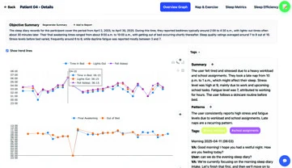

health / RESEARCH PROJECT
Conversational sleep diaries and clinical analytics
ACM HEALTH · Major revision / CHI 2027 · Under review
About this project
At the Intuitive Computing Laboratory, I developed data pipelines and clinician-facing visualizations that connect sleep metrics with the conversations behind them. Our studies explore how voice diaries capture everyday context and support clinical interpretation.
Workflow
- Voice diary conversation
- Structured sleep data
- Clinician analytics
Project demonstration

Research interface · figure from our paper